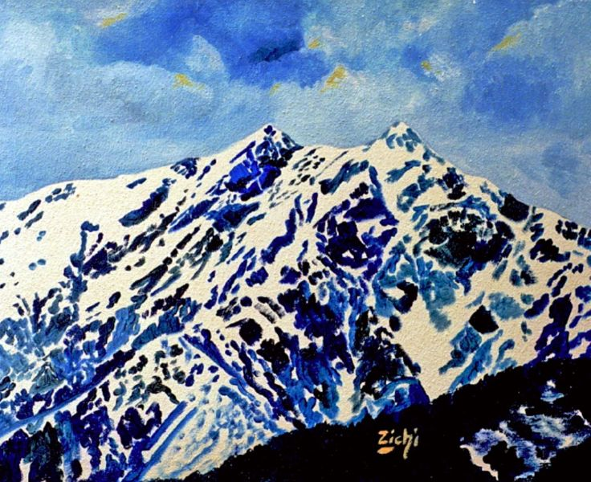
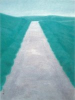

zichi Lorentz

Zichi Lorentz.
Visual Artist.Commentator-Publisher.
Liverpool UK (1952-1971).
London UK (1971-1994).
Japan (1994-).
Present location:Tatsuno City. Hyogo.

Landscape Painting Notes
Some info on that
The Japan Alps
From 1994 until the end of 2002, I lived and worked in the Japan Alps, in central Honshu. My studio stood among the mountains, surrounded by alpine peaks, forests, rivers and waterfalls. It was a landscape of extraordinary natural beauty, shaped by four distinct seasons, crystal-clear water and remarkably clean air. There were mountains rising into the clouds, rushing rivers, dramatic waterfalls, and volcanoes that reminded me of the immense forces beneath the surface of the earth.
For a landscape painter, it was almost a paradise.
{kind=link}

Spirit (click on image).Acrylic on Silk.
Each season brought a completely different world to the studio. Spring arrived with an explosion of cherry blossoms and the delicate flowers of the fruit trees. Summer was quieter and, to me, perhaps less dramatic, although there were still countless treasures to discover—wildflowers, deep green forests, and the changing moods of the mountains.

Higashiyama Kaii
Then came autumn. The landscape seemed to catch fire. Reds, golds, oranges and yellows transformed the mountainsides, sometimes changing from one day to the next. Autumn in the Japan Alps was a painter's dream.
Winter was something altogether different. Snow could arrive in great quantities, covering the landscape for months. The mountains, trees and villages disappeared beneath a vast blanket of white. At times, the scenery looked almost unreal, like the landscapes found on traditional Japanese New Year greeting cards. Winter could also be the longest season, lasting for five months or more.
Living there taught me that a landscape is never simply a collection of mountains, trees and rivers. Light, weather, season and atmosphere continually transform the same place into something new.
Higashiyama Kaii
During those years I became deeply inspired by the great Japanese painter Higashiyama Kaii (1908–1999). His relationship with the Shinshu region—the former name for what is now Nagano Prefecture—had begun when he was a student at Tokyo University.
According to the story, during one of his early journeys through the region, he arrived on a very wet and rainy night and was given shelter and food by a local farmer. That simple act of kindness marked the beginning of his lifelong connection with Shinshu.
After living and painting in the Japan Alps myself for two years, I began to understand what had drawn Kaii to the region. It was not simply the grandeur of the mountains. It was the quality of the light—the subtle atmosphere, the changing tones and the extraordinary silence that seemed to exist between the mountains.
I was fortunate that the Higashiyama Kaii Museum in Nagano City had opened in 1990. Over the years, I visited many times, spending long hours looking closely at his paintings. I studied not only what he painted, but how he painted it—the simplicity of his compositions, his restrained colors, and his remarkable ability to convey the spiritual presence of a landscape.
In 1998, I received a letter of encouragement from Higashiyama Kaii. It was deeply meaningful to me, particularly because by then his work had become such an important influence on my own painting.
He died in 1999. His grave is located not far from my former alpine studio, which gives that landscape an even more personal significance for me.
Leaving the Mountains
In the end, however, it was the winter that defeated me.
I had a hernia in my spine, and dealing with the deep snow and the daily physical demands of living in the mountains became increasingly difficult. Clearing snow, moving through it, and simply managing everyday life during winters that could last five months became too much.
Eventually, I had to leave the mountains.
At the end of 2002, I moved to the warmer climate of Kobe City.
There was, however, an unexpected connection waiting for me there.
I discovered that Higashiyama Kaii had spent part of his childhood in Kobe.
So, although I had left the mountains that had inspired both him and me, in a strange and beautiful way, my journey had not really taken me away from Kaii. I had simply followed another part of his path—from the mountains of Shinshu to the shores and streets of Kobe.